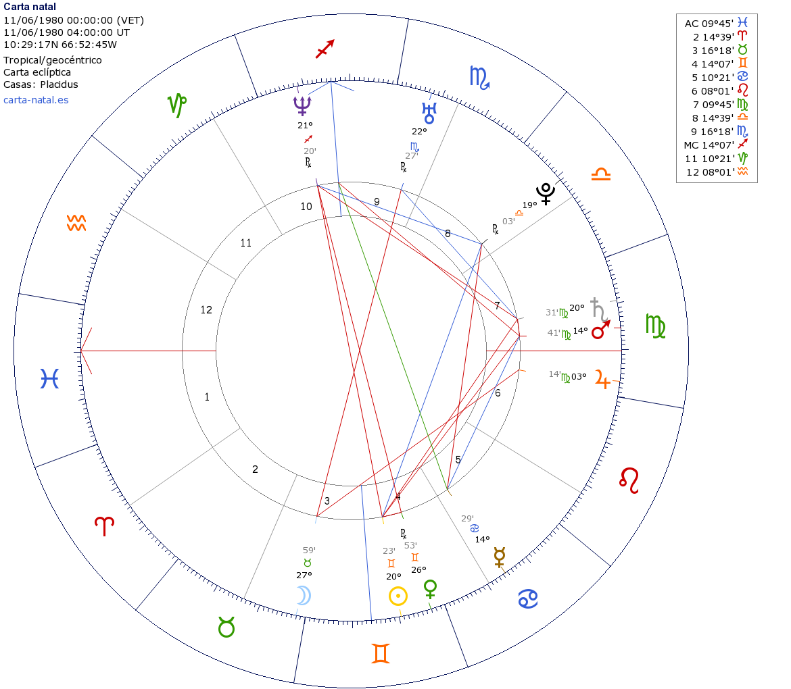

Esta es una entrada en donde debo aclarar una vez más que soy
más un curioso y estudioso de la Astrología que un convencido
astrólogo. Lo que escribiré aquí no es nada que considere
concluyente. Hablar de una influencia astrológica en los precios
del Petróleo reconozco que suena disparatado. De hecho hablar de
cualquier clase de influencia astrológica, que no sea puramente
sugestiva, para la mentalidad científica actual, es
descabellado, una quimera inconcebible. Todavía siento un gran
respeto por esa mentalidad y para nada me atrevería a
desafiarla. Sin embargo las coincidencias que indicaré aquí,
como un posible indicio de dicha influencia, tendrán que
agregarse y compilarse a la serie de hechos que he mencionado en
otras entradas que también encajan dentro del mismo patrón. Aun
así eso no lo hace un estudio serio, el estudio serio todavía me
lo como, aunque espero afrontarlo y abordarlo en alguna ocasión,
si es que alguna vez logró madurar y refinar lo suficiente el
método para trascender el enfoque más que todo mágico/poético de
la astrología. Es esa la razón por la que no me atrevo a
compartir esta entrada con los amigos del crashoil.blogspot.com.
Especialmente con
aquellos del foro a los que abandone
hace un tiempo atrás, y envio un saludo si por algún extraño
hado astrológico alguno se asoma por aquí, porque dudo mucho el
más mínimo interés por las cosas que escribo.
¿A qué hechos o coincidencias que encajan dentro del patrón me refiero? Sobre todo me refiero al tránsito de Saturno por el algunas cartas que he mencionado. Por ejemplo en la entrada anterior a este indique la coincidiencia de ciertos eventos desafortunados o que no terminaron muy bien en la vida de Bolívar durante en las conjunciones de Saturno con su Sol natal, y la concidencia de la muerte de este con la conjunción de Saturno con su ascendente. En la antecesora de esa entrada la coincidencia de la agudización extrema de la crisis venezolana con la conjunción de Saturno con el Sol natal de la revolución bolivariana y otras observaciones, de un carácter bastante nebuloso debo reconocer, con las conjunciones de Saturno con otros puntos de la carta natal de Donald Trump y Dilma Rousseff. En esta entrada me centraré nuevamente en las conjunciones de Saturno con el Sol natal o astral, las cuales sospecho que son las más importantes, en parte porque el Sol es el factor psíquico más relevante.
Lo interesante de investigar la influencia astrológica de los astros en los precios del petróleo, es que únicamente nos debemos centrar en los precios, al contrario de cuando se investiga la influencia astrólogica en la vida de una persona, en donde el carácter de la influencia astrológica en su vida puede ser tan diverso que resulta difícil tomarlo en serio. En todo caso debo acotar que cuando se trata de la conjunción de Saturno con el Sol natal de la persona siempre se trata o bien de situaciones desafortunadas o empresas que no terminan bien o de situaciones que implican muchas más restricciones que las usuales en la vida de la persona.
Para hablar de una influencia de Saturno se necesita al menos un marco de referencia, aunque también podrían ser varios. En este caso se empleara uno solo, la carta astral de la fundación de la OPEP. Esta carta es clave debido a la importancia que tiene aun hoy día esta organización, a pesar de haber pérdido parte de esta con el transcurso de las décadas. Hoy en día controla 43% de la producción mundial, 81% de las reservas y el 34.9% de las exportaciones. Por tanto es evidente que no solo es importante en la actualidad, sino que lo será, y puede que más, en el futuro. Fue fundada el 14-9-1960.
Una conjunción de Saturno con el Sol natal de la OPEP implica una disrupción en el normal funcionamiento de esta organización. Indica una situación de crisis, sea para esta o para el mundo, que debende de su petróleo, o para ambos (por ejemplo: una guerra entre productores y consumidores). Esta situación bien puede venir expresada por unos precios bajos (crítico o fatal para la OPEP) o como precios altos (crítico o fatal para el mundo).
|
 |
|
Carta Astral de la Fundación de la OPEP (la hora no es exacta) |
Hay dos grandes crisis petroleras que han coincidido con el tránsito de Saturno por el Sol natal de la carta astral de la OPEP, son los únicos dos tránsitos que han habido. La primera de esas crisis fue la crisis petrolera de los años 1979 (1978-1981) y la segunda la crisis del año 2009-2013 . Ambas crisis eran de precios altos del petróleo. En la crisis de 1979, Saturno entro en conjunción exacta con el Sol natal para Junio de 1980.
|  |
|
Conjunción entre Saturno y el Sol de la carta fundacional de la OPEP para el 11-6-1980 |
La otra conjunción exacta se produciría para Agosto del año 2009. En la primera crisis los precios casi se triplicaron, mientras que en la segunda los precios se triplicaron fácilmente y estuvieron cerca de cuadruplicarse (tomando como referencia un precio de 30$). Previamente el 11 de Julio del 2008, fuera de una conjunción con Saturno y a un 1 año de esta, el barril Brent alcanzo la cifra record de 147.25$.
|
|
|
Carta Astral del 1-8-2009 a menos de 2 grados de una conjunción exacta con el Sol natal de la OPEP |
Básicamente esto es lo más relevante que puedo decir en cuanto a los tránsitos de Saturno y las crisis petroleras. La crisis de 1973, debida a la Guerra de Yon Kipur, se aleja por 10 grados de una cuadratura con el Sol natal de la OPEP, al que además le pasa de largo, por eso no la considero representativa, es una lástima que no encaje. Veo muy rebuscado explorar los aspectos con otros puntos de la carta astral, por eso creo que es mejor dejarlo hasta aquí. Espero que mis amigos de foro del crash oil no tengan que esperar demasiado para ver otra crisis petrolera, una conjunción con Saturno y el Sol natal de la OPEP no ocurrira sino hasta 2048 y eso no encaja para nada dentro de la Curva de Hubbert , y los pronósticos de Antonio Turiel. Tampoco creo que haya que esperar tanto, así que mal para Saturno.